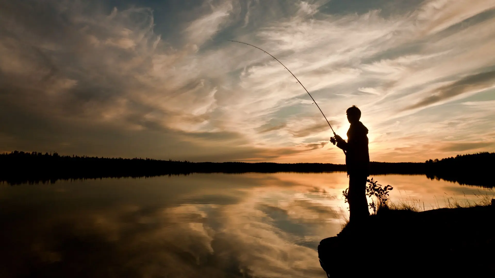

LRF Olta Balıkçılığına Hoş Geldiniz
Türkiye'nin en kapsamlı LRF Rehberi. Malzemeleri tanı, teknikleri öğren ve denize çık.
LRF Nedir?

LRF, İngilizce Light Rock Fishing kelimelerinin baş harflerinden oluşan, Türkçeye "Hafif Kaya Balıkçılığı" olarak çevrilebilen, Japonya kökenli, ultra hafif (0,5-10 gr atış ağırlığı aralığındaki) narin kamışlar, ince ipler ve mikro yemlerle kıyıdan yapılan bir at-çek avcılık disiplinidir. Yüksek hassasiyet ve aksiyon üzerine kuruludur.

LRF Kamışı
LRF kamışları genellikle 1,8-2,4 metre uzunluğunda, hafif ve hassas yapıdadır. İnce misina ve küçük maketlerle uyumlu olması için özel olarak tasarlanmıştır. Atış hassasiyeti ve balık hissini doğrudan etkiler.

Spinning Makine
Spinning makine, LRF'nin vazgeçilmez parçasıdır. 1000-2500 numara arası makineler bu set için uygundur. İyi bir fren sistemi ve hafif yapı, uzun süreli balıkçılıkta yorgunluğu azaltır.

Maketler ve Jigler
Soft plastik maketler, metal jigler og küçük spinner'lar LRF'nin temel yemleridir. Renk ve boyut seçimi, avlanılan balık türüne ve su koşullarına göre değişir.

Aksesuarlar
Kırmızı-beyaz led'li kafa lambaları, narin balıkçı penseleri, katlanır fileler, balık maşaları ve mikro yem kutuları av esnasında hızınızı ve konforunuzu artırır. Küçük dokunuşlar, büyük balıkları kıyıya hasarsız almanızı sağlar.
3 Adımda LRF Balıkçılığı
-
Ekipmanı Tanı
Kamış, makine, misina ve maket seçimini öğren. Doğru ekipman, başarılı bir balıkçılığın temelidir.
-
Tekniği Öğren
Atış teknikleri, maket kullanımı ve balık davranışlarını anla. Pratik yaparak gelişirsin.
-
Denize Çık
Doğru noktayı seç, sabırlı ol ve keyfini çıkar. Her atış yeni bir deneyimdir.
Hazır Hissediyorsun, Değil mi?
Malzeme Rehberimizle ekipmanını seç, Başlangıç Rehberi ile ilk atışına hazırlan.